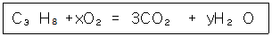
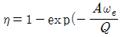
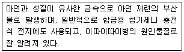
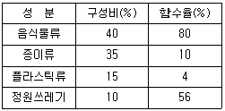
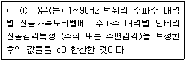

환경기능사 (2008-10-05 기출문제)
1과목: 대기오염방지
1. 다음 중 사이클론(cyclone)의 집진효율을 향상시티는 조건으로 가장 거리가 먼 것은?
- 배기관경(내관)을 크게 한다.
- 입구 가스 속도(한계유속 내)를 빠르게 한다.
- skimmer와 회전깃 등을 설치한다.
- 고농도 일 경우에는 병렬로 연결하여 사용한다.
(정답률: 61%)

2. 어떤 유해 가스의 기상 분압이 38mmHg 일 때 그 성분의 액상에서의 농도가 2.5koml/m3으로 평형을 이루고 있다. 이 때 헨리상수(atm·m3/kmol)는?
- 0.02
- 0.04
- 0.062
- 0.08
(정답률: 36%)
3. 대기오염공정시험방법상 굴뚝 배출가스 중 질소산화물의 연속자동 측정방법이 아닌 것은?
- 화학발광법
- 적외선흡수법
- 자외선흡수법
- 용액전도율법
(정답률: 54%)
4. 중력집진장치의 침강실에서 입자상 오렴물질의 최종침강속도가 0.2m/s, 높이가 1.5m일 때 이엇을 완전제거하기 위하여 소요되는 이론적인 중력 침강실의 길이(m)는? (단, 집진장치를 통과하는 가스의 속도는 2m/s 이고 층류를 기준으로 한다.)
- 5.0m
- 7.5m
- 15.0m
- 17.5m
(정답률: 40%)
5. 세정 집진장치에서 입자의 포집원리로 거리가 먼 것은?
- 액적에 입자가 충돌하여 부착한다.
- 미립자 확산에 의하여 액적과의 접촉을 쉽게한다.
- 입자는 증기의 응결에 따라 입자의 응집성을 감소시킨다.
- 배기증습에 의하여 입자가 서로 응집한다.
(정답률: 67%)
6. 프로판(C3H8)의 연소반응식은 아래와 같다. 다음 식에서 x, y 값을 옳게 나타낸 것은?

- x = 2, y = 2
- x = 3, y = 4
- x = 4, y = 3
- x = 5, y = 4
(정답률: 55%)
7. A 전기집진장치의 집진극 면적/처리유량이 A/Q=200(m/s)-1로 운전되고 있다. 입구먼지농도 Ci=100g/m3, 출구먼지농도 Co=0.3g/m3일 때 이 먼지의 겉보기 이동속도 ωe (m/s)는? (단, Deutsch Anderson 식 (

이용)- 0.013 m/s
- 0.018 m/s
- 0.029 m/s
- 0.036 m/s
(정답률: 38%)
8. 다음 중 헨리의 법칙을 적용하기 가장 어려운 것은?
- CO
- NO
- HF
- O2
(정답률: 63%)
9. 순수한 탄화수소(HC)를 과잉공기로 연소시킬 때 연소가스에 포함 되지 않을 것으로 예상되는 물질은?
- O2
- N2
- CO2
- H2S
(정답률: 48%)
10. 일산화탄소(CO)의 성질에 대한 설명 중 틀린 것은?
- 무색, 무미, 무취이다.
- 연료의 불완전연소시 발생한다.
- 혈액내의 헤모글로빈과 결합력이 강하다.
- 물에 잘 녹는다.
(정답률: 69%)
11. 세정 집진장치의 특징으로 거리가 먼 것은?
- 고온의 가스를 처리할 수 있다.
- 폐수처리 장치가 필요하다.
- 점착성 및 조해성 먼지를 처리 할 수 없다.
- 포집된 먼지의 재비산 염려가 거의 없다.
(정답률: 63%)
12. 사이클론에 있어서 처리가스량의 5~10%를 흡인하여 선회기류의 흐트러짐을 방지하고 유효원심력을 증대시키는 효과를 무엇이라 하는가?
- 축류효과(Axial effect)
- 나선효과(Herical effect)
- 먼지상자효과(dust box effect)
- 블로다운효과(Blow-down effect)
(정답률: 80%)
13. 전기 집진장치의 장점으로 가장 적합한 것은?
- 고온가스(약 350℃ 정도)의 처리가 가능하다.
- 설치면적이 작고, 설치비용도 적은 편이다.
- 주어진 조건에 따른 부하변동 적응이 쉽다
- 압력손실이 150mmH2O정도로 높아 집진율이 우수하다.
(정답률: 55%)
14. 가스량이 15000m3/h인 유해가스를 흡수탑을 이용하여 정화할 때 소요되는 흡수탑의 직경은? (단, 흡수탑내 접근 유속은 1.0m/s 임)
- 2.3m
- 2.5m
- 3.3m
- 4.5m
(정답률: 24%)
15. 런던형스모그에 관한 설명으로 가장 거리가 먼 것은?
- 주로 아침 일찍 발생한다.
- 습도와 기온이 높은 여름에 주로 발생한다.
- 복사역전 형태이다.
- 시정거리가 100m 이하이다.
(정답률: 65%)
2과목: 폐수처리
16. 알칼리도에 관한 성명으로 가장 거리가 먼 것은?
- 산이 유입될 때 이를 중화사킬 수 있는 능력의 척도이다.
- 0.01N NaOH로 적정하여 소비된 양을 탄산칼슘의 당량으로 환산하여 mg/L로 나타낸다.
- 중탄산염이 많이 포함된 물을 가열하면 CO가 대기중으로 방출되어 물 속에 OH⁻가 존재하므로 알칼리성을 띠게 된다.
- 일반적으로 지연수에 존재하는 이온 중 알칼리도에 기여하는 물질의 강도는 OH- > CO32- > HCO3-순이다.
(정답률: 44%)
17. C2H5OH를 완전산화 시킬 때 ThOD/TOC 의 비는 얼마인가?
- 1.57
- 1.98
- 2.67
- 4
(정답률: 56%)
18. 상수처리에서 완속 여과법과 비교한 급속 여과법의 특징으로 가장 거리가 먼 것은?
- 실트, 조류, 금속산화물 등의 현탁물 외에 점토, 세균, 바이러스, 색도성분 등의 콜로이드성분이 제거가능하나 용해성분인 암모니아성질소, 페놀류, 냄새성분 등에 대해서는 제거 효율이 낮다.
- 여과속도에 따라 120~150m/day의 표준여과 및 200~300m/day 이상의 고속여과로 구분할 수 있다.
- 잔류염소를 포함하지 않는 물을 여과하는 경우 , 수온이 높은 시기에는 여재 표면에 증식한 미생물의 활동에 의해 암모니아성질소 등의 용해성분 일부가 제거되는 경우도 있다.
- 여과시 손실수두가 작고, 원칙적으로 약품을 사용하지 않고 처리하는 방법이다.
(정답률: 38%)
19. 다음 중 슬러지 평화의 지표로서 가장 관계가 깊은 것은?
- 함수율
- SVI
- TSS
- NBDCOD
(정답률: 76%)
20. 1mM의 수산화칼륨이 녹아 있는 수용액의 pH는 얼마인가? (단, 수산화칼슘은 완전해리 한다.)
- 2.7
- 4.5
- 9.5+
- 11.3
(정답률: 47%)
21. 다음 중 경도의 주 원인물질은?
- Ca2+, Mg2+
- Ba2+, Cd2+
- Fe2+, Pb2+
- Ra2+, Mn2+
(정답률: 75%)
22. A공장에서 NaOH가 3% 함유된 폐수 500m3/day를 방출하고 있다. 중화제를 사용하여 이 폐수를 중화시키는데 필요한 중화제의 양 (m3/day)은? (단, 중화제로는 37% HCI(비중 1.18)을 사용, 이폐수의비중은 1.0으로 본다. Na:23, Cl:35.5)
- 27.75m3/day
- 31.35m3/day
- 37.75m3/day
- 41.35m3/day
(정답률: 33%)
23. 50000m3/day의 상수를 살균하기 위해 20kg/day의 염소가 사용되고 있는데 15분 접촉 후 잔류염소는 0.2mg/L이다. 이 때 염소 주입농도 (①)와 염소요구량 (②)은 각각 얼마인가?
- ① 0.8 mg/L, ② 0.4 mg/L
- ① 0.2 mg/L, ② 0.4 mg/L
- ① 0.4 mg/L ,② 0.8 mg/L
- ① 0.4 ,mg/L ② 0.2 mg/L
(정답률: 39%)
24. 다음 설명하는 오염 물질로 가장 적합한 것은?

- 비소
- 크롬
- 시안
- 카드늄
(정답률: 77%)
25. A공장 폐수의 BOD가 800ppm이다. 유입폐수량 1000m3/h 일 때 1일 BOD 부하량은? (단, 폐수의 비중은 1.0 이고, 24시간 연속 가동한다.)
- 19.2 ton
- 20.2 ton
- 21.2 ton
- 22.2 ton
(정답률: 43%)
26. 농도표시에 관한 다음 설명 중 거리가 먼 것은?
- 1%는 1ppm의 천배이다.
- 액체의 비중이 1일 경우 1mg/L는 1ppm이다.
- 슬러지의 농도 표시는 슬러지 1kg에 함유된 mg수가 주로 사용된다.
- 1ppb는 1ppm의 천분의 1 농도를 의미한다.
(정답률: 51%)
27. 다음 중 카드늄(Cd) 함유 폐수처리법으로 거리가 먼 것은?
- 수산화물 침전법
- 황화물 침전법
- 탄산염 침전법
- 시안화제2철 침전법
(정답률: 50%)
28. Cr6+함유 폐수 처리법으로 가장 적합한 것은?
- 환원→중화→침전
- 환원→침전→중화
- 중화→침전→환원
- 중화→환원→침전
(정답률: 68%)
29. 오염물질은 배출하는 형태에 따라 점오염원과 비점오염원으로 구분된다. 다음 중 비점오염원에 해당하는 것은?
- 생활하수
- 농경지 배수
- 축산폐수
- 산업폐수
(정답률: 82%)
30. 활성슬러지공법으로 운전할 때 발생되는 문제점으로 가장 거리가 먼 것은?
- 슬러지 bulking
- 슬러지 rising
- pin floc
- ponding
(정답률: 46%)
31. 폐수의 살균에 대한 설명으로 옳지 않은 것은?
- NH2Cl보다는 HOCl이 살균력이 크다.
- 보통 온도를 높이면 살균속도가 빨라진다
- 같은 농도일 경우 유리잔류염소는 결합잔류염소보다 빠르게 작용하므로 살균능력도 훨씬크다.
- HOCl이 오존보다 더 강력한 산화제이다.
(정답률: 48%)
32. 1차 원형침전지의 깊이가 3m이고, 표면적 1m2dp 대해서 36m3/day로 폐수가 유입된다면 이 때의 체류시간은?
- 2 hr
- 3 hr
- 6 hr
- 12 hr
(정답률: 24%)
33. 개방유로의 유량측정에 주로 사용되는 것으로서, 일정한 수위와 유속을 유지하기 위해 침사지의 폐수가 배출되는 출구에 설치하는 것은?
- 그릿(grit)
- 스크린(screen)
- 배출관(out-flow tube)
- 위어(weir)
(정답률: 66%)
34. 다음 중 콘크리트 하수관거의 부식을 유발하는 오염물질로 가장 적합한 것은?
- NH4+
- SO42-
- Cl-
- PO43-
(정답률: 63%)
35. 다음 하수 처리 계통 중 가장 적합한 것은?
- 침사지 → 1차침전지→ 포기조→ 2차침전지→ 염소소독→ 방류
- 염소소독→ 침사지→ 포기조→ 침전지→ 방류
- 염소소독→ 침사지→ 포기조→ 소화조→ 저류조→방류
- 1차침전지→ 포기조→ 2차침전지→ 급속여과조→ 활성탄처리조→ 침사지→ 방류
(정답률: 72%)
3과목: 폐기물처리
36. 고형물 함량이 3wt%인 액상 폐기물 100kg을 고형물 함량20wt%로 농축시켰을 때 제거된 수분 양은?
- 65 kg
- 75 kg
- 85 kg
- 95 kg
(정답률: 36%)
37. 다음 슬러지 처리 계통도 중 가장 적합한 것은?
- 슬러지 → 탈수 → 건조 → 개량 → 소각 → 매립
- 슬러지 → 소화 → 탈수 → 개량 → 농축 → 매립
- 슬러지 → 농축 → 개량 → 탈수 → 소각 → 매립
- 슬러지 → 개량 → 탈수 → 농축 → 소각 → 매립
(정답률: 58%)
38. 다음 중 폐기물 처리를 위해 가장 우선적으로 추진해야하는 방향은?
- 퇴비화
- 감량
- 위생매립
- 소각열회수
(정답률: 74%)
39. 유동상 소각로의 장점으로 거리가 먼 것은?
- 유동매체의 열용량이 커서 전소 및 혼소가 가능하다.
- 연소효율이 높아 미연소분의 배출이 적고 2차 연소실이 불필요하다.
- 유동매체의 손실이 없어 유지관리비가 적게 소요한다.
- 과잉공기량이 적고 질소산화물도 적게 배출된다.
(정답률: 46%)
40. 매립지의 폐기물에 포함된 수분, 매립지에 유집되는 빗물에 의해 발생하는 침출수의 유출 방지와 매립지 내부로의 지하수 유집을 방지하기 위하여 설치하는 것은?
- 차수시설
- 복토시설
- 다짐시설
- 회수시설
(정답률: 68%)
41. 압축전 폐기물의 밀도가 0.4톤/m3이고, 압축 후에는 0.85톤/m3 이었다면 부피 감소율은? (단, 압축전 부피 1기준)
- 37%
- 41%
- 47%
- 53%
(정답률: 37%)
42. 혐기성 소화탱크에서 유기물 75%, 무기물 25%인 슬러지를 소화처리하여 소화슬러지의 유기물이 60%, 무기물이 40%가 되었다. 이때의 소화효율은?
- 30%
- 40%
- 50%
- 60%
(정답률: 42%)
43. 소각장에서 폐기물을 연소시킬 때 조건으로 가장 거리가 먼 것은?
- 완전연소를 위해 체류시간은 가능한 한 짧아야 한다.
- 연료와 공기가 충분히 혼합되어야 한다.
- 공기/연료비가 적절해야 한다.
- 점화온도가 적정하게 유지 되게 재의 방출이 최소화 될 수 있는 소각로 형태이어야 한다.
(정답률: 73%)
44. 쓰레기 2톤을 건조시킨 후 무게를 측정하였더니 1000kg이 되었다면 이 때의 함수율은?
- 10%
- 25%
- 50%
- 100%
(정답률: 69%)
45. 폐기물의 최종처분으로 실시하는 내륙매립 공법이 아닌 것은?
- 셀 공법
- 압축매립 공법
- 박층뿌림 공법
- 도랑형 공법
(정답률: 69%)
46. 물의 증발잠열은 약 얼마인가?
- 300 kcal/kg
- 600 kcal/kg
- 900 kcal/kg
- 1200 kcal/kg
(정답률: 63%)
47. A 도시에서 1년간 쓰레기 수거량은 3400000톤 이다. 이 쓰레기를 5500명이 하루 8시간씩 수거하였다면 수거능력(MHT)은? (단, 1년간 작업일수는 310일 이다)
- 4.01 manㆍhr/ton
- 3.37 manㆍhr/ton
- 2.72 manㆍhr/ton
- 2.15 manㆍhr/ton
(정답률: 47%)
48. 메탄올(CH3OH) 1kg을 12%의 과잉공기를 공급하여 완전 연소시킬 때 소요되는 공기의 양은? (단, 표준상태 기준)
- 4.4 Sm3
- 5.0 Sm3
- 5.6 Sm3
- 6.2 Sm3
(정답률: 41%)
49. 일정기간동안 특정지역의 쓰레기 수거차량의 대수를 조사하여 이 값에 쓰레기의 밀도를 곱하여 중량으로 환산하여 쓰레기 발생량을 산출하는 방법은?
- 경향법
- 직접계근법
- 물질수지법
- 적재차량 계수 분석법
(정답률: 81%)
50. 스토커(stoker)방식 소각로의 장점으로 틀린 것은?
- 연속적인 소각과 배출이 가능하다.
- 체류시간이 짧고, 교반력이 강하며, 국부가열의 최소화로 고효율 유지가 가능하다.
- 수분의 많은 쓰레기의 소각도 가능하다.
- 발열량이 낮은 쓰레기의 소각도 가능하다.
(정답률: 59%)
51. 다음 중 연료 자체가 타는 경우로 휘발유와 같이 끓는점이 낮은 기름의 연소나 왁스가 약화하여 다시 기화되어 연소되는 형태는?
- 분해연소
- 표면연소
- 자기연소
- 증발연소
(정답률: 60%)
52. 쓰레기의 양이 4,000m3이며, 밀도는 1.2ton/m3 이다. 적재용량이 8ton인 차량으로 이 쓰레기를 운반한다면 몇 대의 차량이 필요한가?
- 120 대
- 400 대
- 500 대
- 600 대
(정답률: 50%)
53. 탄소, 수소, 산소, 황을 무게로 각각 87%, 4%, 8%, 1% 함유한 중유의 연소에 필요한 이론 산소량이 1.80Sm3/kg 이라면 이론 공기량은?
- 약 2.8Sm3/kg
- 약 5.2Sm3/kg
- 약 8.6Sm3/kg
- 약 10.3Sm3/kg
(정답률: 42%)
54. 다음은 생활 쓰레기의 성분별 구성비와 함수율을 나타낸 것이다. 이 쓰레기의 평균 함수율은?

- 35.9%
- 37.1%
- 39.7%
- 41.7%
(정답률: 34%)
55. 쓰레기 발생량에 영향을 미치는 요인에 대한 설명 중 가장 적합한 것은?
- 기후에 따라 쓰레기 발생량과 종류가 다르게 된다.
- 수거빈도가 잦으면 쓰레기 발생량이 감소하는 경향이 있다.
- 쓰레기통의 크기가 클수록 쓰레기 발생량이 감소하는 경향이 있다.
- 재활용품의 회수 및 재이용률이 높을수록 쓰레기 발생량은 증가한다.
(정답률: 58%)
4과목: 소음 진동학
56. 다음 중 진동과 관련한 용어설명이다. ( ① )안에 알맞은 것은?

- 진동레벨
- 등감각곡선
- 변위진폭
- 진동수
(정답률: 71%)
57. 바닥면적이 5m × 6m 이고, 높이가 3m인 방의 바닥, 벽, 천장의 흡음율이 각각 0.1, 0.2, 0.6 일 때 평균흡음율은?
- 약 0.22
- 약 0.27
- 약 0.31
- 약 0.35
(정답률: 41%)
58. A벽체 입사음의 세기가 10⁻3W/m2이고, 투과음의 세기가 10⁻⁶W/m2일 때 투과 손실은?
- 10 dB
- 20 dB
- 30 dB
- 40 dB
(정답률: 52%)
59. 가속도진폭의 최대값이 0.01m/s2 인 정현진동의 진동 가속도 레벨은?(단, 기준 10⁻5m/s2)
- 28 dB
- 30 dB
- 57 dB
- 60 dB
(정답률: 40%)
60. 음의 굴절에 관한 다음 설명 중 틀린 것은?
- 음파가 한 매질에서 타 매질로 통과할 때 구부러지는 현상이다
- 대기의 온도차에 의한 굴절은 온도가 낮은 쪽으로 굴절한다.
- 음원보다 상공의 풍속이 클 때 풍상측에서는 상공으로 굴절한다.
- 밤(지표부근의 온도가 상공보다 저온)이 낮(지표부근의 온도가 상공보다 고온)보다 거리감쇠가 크다.
(정답률: 58%)